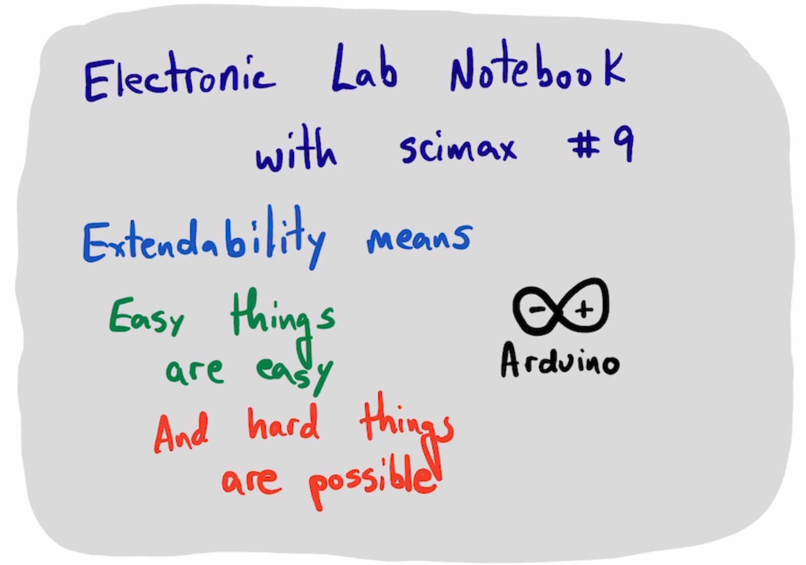
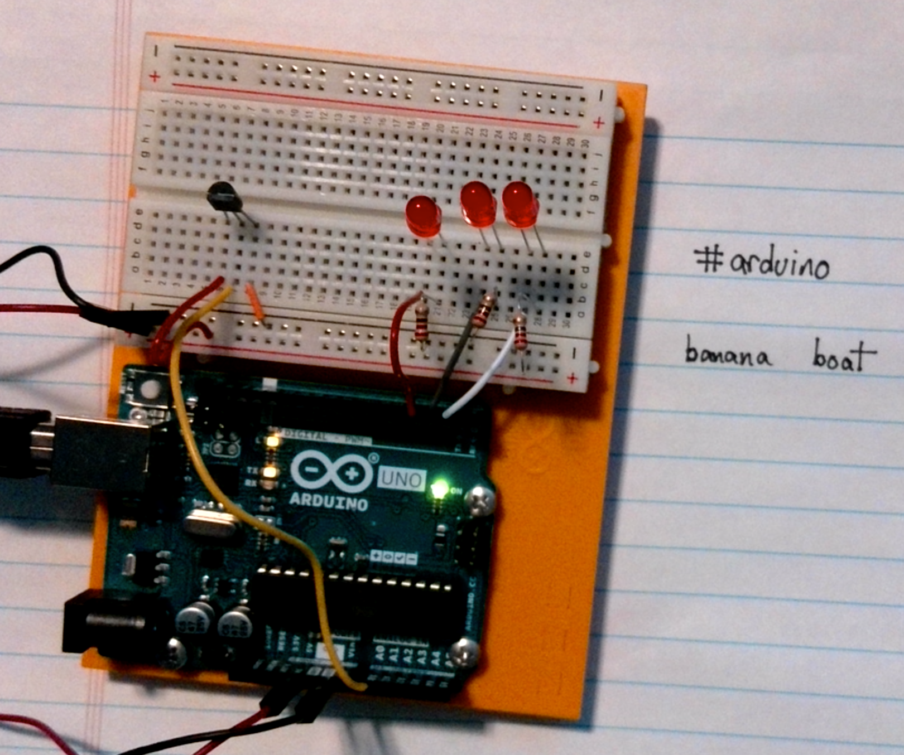
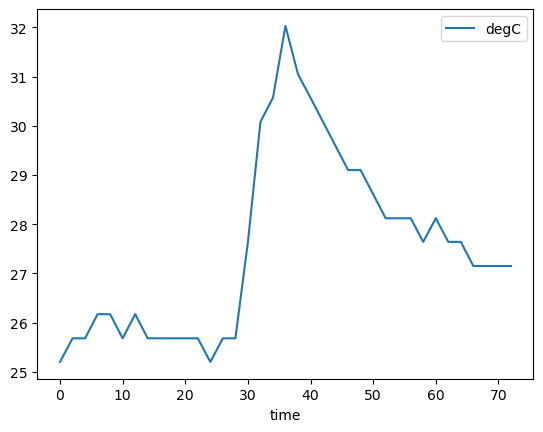

Electronic Lab Notebook for Arduino devices with scimax
Table of Contents

arduino-cli board list
(load-file "scimax-ob-arduino.el")
1. Setup the instrument
const int sensorPin = A0; const float baselineTemp = 25.0; unsigned long time; void setup(){ Serial.begin(9600); for(int pinNumber = 2; pinNumber<5; pinNumber++){ pinMode(pinNumber, OUTPUT); digitalWrite(pinNumber, LOW); } Serial.println("time(s), sensor value, volts, degC, state"); } void loop(){ int sensorVal = analogRead(sensorPin); time = micros(); Serial.print(time / 1e6); Serial.print(", "); Serial.print(sensorVal); float voltage = (sensorVal / 1024.0) * 5.0; // convert to voltage Serial.print(", "); Serial.print(voltage); Serial.print(", "); float temperature = (voltage - 0.5) * 100; Serial.print(temperature); if(temperature < baselineTemp + 2){ digitalWrite(2, LOW); digitalWrite(3, LOW); digitalWrite(4, LOW); Serial.print(", 0"); } else if (temperature >= baselineTemp + 2 && temperature < baselineTemp + 4){ digitalWrite(2, HIGH); digitalWrite(3, LOW); digitalWrite(4, LOW); Serial.print(", 1"); } else if (temperature >= baselineTemp + 4 && temperature < baselineTemp + 6){ digitalWrite(2, HIGH); digitalWrite(3, HIGH); digitalWrite(4, LOW); Serial.print(", 2"); } else if (temperature >= baselineTemp + 6){ digitalWrite(2, HIGH); digitalWrite(3, HIGH); digitalWrite(4, HIGH); Serial.print(", 3"); } // I found each loop takes about 0.002 microseconds leading to 0.1 second // drift over 100 seconds. With this setting, we are at 99.99 after 50 steps. Serial.println(); delay(1998); }
2. Save an image
:file 2024-06-25-19-46-27.aiff

3. Save a video
:file 2024-06-25-19-44-44.mov :note "example of how the device works"
TODO rm tooltip and also placement of sem editmarks is a little buggy
4. Save some data
(serial-term "/dev/cu.usbmodem143101" 9600)
Run this to save the data.
(with-temp-file "data.csv" (insert (with-current-buffer "/dev/cu.usbmodem143101" (buffer-string))))
But it also blocks uploading, so kill it like
(kill-buffer "/dev/cu.usbmodem143101")
t
head data.csv
import pandas as pd df = pd.read_csv('data.csv', skiprows=1, names=['time', 'sensor', 'volts', 'degC', 'state']) df
| time | sensor | volts | degC | state | |
|---|---|---|---|---|---|
| 0 | 0.00 | 154 | 0.75 | 25.20 | 0 |
| 1 | 2.00 | 155 | 0.76 | 25.68 | 0 |
| 2 | 4.00 | 155 | 0.76 | 25.68 | 0 |
| 3 | 6.00 | 156 | 0.76 | 26.17 | 0 |
| 4 | 8.00 | 156 | 0.76 | 26.17 | 0 |
| 5 | 10.00 | 155 | 0.76 | 25.68 | 0 |
| 6 | 12.00 | 156 | 0.76 | 26.17 | 0 |
| 7 | 14.00 | 155 | 0.76 | 25.68 | 0 |
| 8 | 16.00 | 155 | 0.76 | 25.68 | 0 |
| 9 | 18.00 | 155 | 0.76 | 25.68 | 0 |
| 10 | 20.00 | 155 | 0.76 | 25.68 | 0 |
| 11 | 22.00 | 155 | 0.76 | 25.68 | 0 |
| 12 | 24.00 | 154 | 0.75 | 25.20 | 0 |
| 13 | 26.00 | 155 | 0.76 | 25.68 | 0 |
| 14 | 28.00 | 155 | 0.76 | 25.68 | 0 |
| 15 | 30.00 | 159 | 0.78 | 27.64 | 1 |
| 16 | 32.00 | 164 | 0.80 | 30.08 | 2 |
| 17 | 34.00 | 165 | 0.81 | 30.57 | 2 |
| 18 | 35.99 | 168 | 0.82 | 32.03 | 3 |
| 19 | 37.99 | 166 | 0.81 | 31.05 | 3 |
| 20 | 39.99 | 165 | 0.81 | 30.57 | 2 |
| 21 | 41.99 | 164 | 0.80 | 30.08 | 2 |
| 22 | 43.99 | 163 | 0.80 | 29.59 | 2 |
| 23 | 45.99 | 162 | 0.79 | 29.10 | 2 |
| 24 | 47.99 | 162 | 0.79 | 29.10 | 2 |
| 25 | 49.99 | 161 | 0.79 | 28.61 | 1 |
| 26 | 51.99 | 160 | 0.78 | 28.12 | 1 |
| 27 | 53.99 | 160 | 0.78 | 28.12 | 1 |
| 28 | 55.99 | 160 | 0.78 | 28.12 | 1 |
| 29 | 57.99 | 159 | 0.78 | 27.64 | 1 |
| 30 | 59.99 | 160 | 0.78 | 28.12 | 1 |
| 31 | 61.99 | 159 | 0.78 | 27.64 | 1 |
| 32 | 63.99 | 159 | 0.78 | 27.64 | 1 |
| 33 | 65.99 | 158 | 0.77 | 27.15 | 1 |
| 34 | 67.99 | 158 | 0.77 | 27.15 | 1 |
| 35 | 69.99 | 158 | 0.77 | 27.15 | 1 |
| 36 | 71.99 | 158 | 0.77 | 27.15 | 1 |
df.plot(x='time', y='degC')
<Axes: xlabel='time'>
